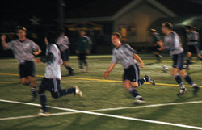

|
YCAC, Wednesday, April 29th
It's not really on to write a TML wrap up story before the season's ended, but let's face it YCAC 1st X1 wrapped up their season somewhat decisively by systematically dismantling Tokyo Hibernian FC. 4-0 was the final score in a game that saw YCAC go 3 ahead in the first half. Hibs had to take points from this game to keep any hopes of the title in sight but alas, it wasn't to be.
YCAC 1st XI will be the name inscribed on the Division One trophy and Hibs, once again left with an annoying sense of déjà vu, will be wondering what on earth happened as going into the second half of the season all smart money was on the little green men to triumph - but that's football. Hibs still have the chance to hold onto their FJ Cup honours, although word on the street is that Celts and their entourage are raring for this one. Credit where credit's due 'tho, Hibs have won more silverware than any other team in TML... ever...
As for the other divisions, FC International won Division Two and thus promotion to top flight football next season ages ago - it was never in doubt, they outclassed and outgunned all their opponents and will fair well in the first division although they won't be granted such a facile time as with each new season teams in division one are getting younger, fitter and faster - it's ridiculous.
For El Diego not to win the third division there'll have to be a couple of major upsets in their remaining few games, but it 'aint over till the fat lady sings and all that... There's actually been a fair bit of patter about this team, comments to the effect of El Diego on their day could at a bare minimum unnerve some of the stronger teams, if not cream them, two divisions above them and that promotion for them is almost certain next season too. Division Two, you've been warned.
Report by Footy Japan.
|